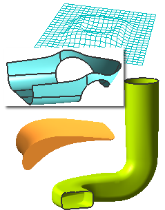

本课程将让您掌握包括使用 nx_freeform_1和 nx_freeform_2许可证的基本信息。
本课程必须在其他自由曲面课程之前学习，本课程只需要学习一次。

自由形状特征是一些具有一个或多个B样条曲面，或修剪的平面的片体或实体。由于创建技术和软件环境不同，这些平面通常是具有一定格式的。
自由形状建模课程中将介绍如何创建这些具有特定格式的特征，这些特征一般都有光顺、弯曲的面。这些自由成形特征大多数都是曲面(片体)。